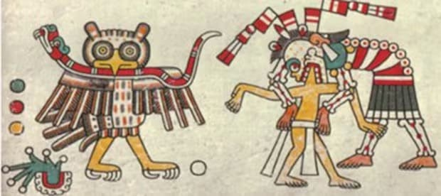

Son pasadas las once de la noche. Malinalco está en silencio. Las calles empedradas del Barrio de San Juan no tienen un alma. Y desde la ventana, el Cerro de los Ídolos se ve oscuro, enorme, quieto.
Quieto, pero no vacío.
Los locales de Malinalco lo saben. Varias generaciones de habitantes del Barrio de San Martín — los llamados "brujos" — lo cuentan en voz baja. Algunos visitantes lo sienten sin saber explicarlo. Y la tradición oral de tres mil años le da un nombre a lo que vigila desde esa cima oscura.
Los guardianes del cerro.
El cerro que nunca duerme
Para entender a los guardianes, primero hay que entender qué es el Cerro de los Ídolos para la cosmovisión de Malinalco. No es simplemente una elevación geográfica con ruinas arqueológicas encima. Es — según la tradición mesoamericana — un eje cósmico.
En las culturas prehispánicas, las montañas y los cerros no eran accidentes del paisaje. Eran seres vivos. Entidades sagradas habitadas por dioses y espíritus ancestrales. El nombre que los aztecas usaban para estos seres — Tlaltepicme — significa literalmente "señores de la tierra que sostiene el cielo".
El Cerro de los Ídolos no era solo sagrado por el Cuauhcalli que tiene en su cima. Era sagrado antes de que los aztecas llegaran. Antes de que Malinalxóchitl lo eligiera como territorio. Antes de que hubiera un nombre para el pueblo que se construyó a sus pies. El cerro llevaba siglos siendo guardado cuando los mexicas llegaron a grabarlo con sus águilas y jaguares.
El eje cósmico de tres planos
La cosmovisión mesoamericana organizaba el universo en tres planos superpuestos. El cerro era el punto exacto donde los tres se tocaban:
Un cerro como punto de convergencia de estos tres planos era, literalmente, el lugar más poderoso y peligroso del mundo. Un espacio donde los límites entre la vida y la muerte, entre lo divino y lo humano, eran permeables. Ese tipo de lugar no se deja sin vigilancia.
Los dos guardianes eternos
Según las tradiciones locales de Malinalco, los guardianes del cerro son dos. No son aleatorios — son los mismos dos animales sagrados que están esculpidos en el piso del Cuauhcalli. Los mismos que daban nombre a las dos órdenes militares que se iniciaban aquí.
Los habitantes del Barrio de San Martín — conocidos como "los brujos" de Malinalco — tienen una relación especial con estas tradiciones. Su capilla tiene la cúpula decorada con siete serpientes. Su santo patrono fue llamado "Santo brujo" por el párroco. Son el barrio que más directamente conecta con la tradición espiritual más antigua del pueblo. Y ellos son quienes más hablan de los guardianes.
Los nahuales: 3,000 años de historia viva
Los guardianes del cerro son, en la tradición mesoamericana, una forma de nahuales — una de las figuras espirituales más antiguas y complejas de México.
El antropólogo Francisco Rivas Castro, del INAH, ha estudiado los nahuales en códices prehispánicos durante décadas. Su conclusión es reveladora: la figura del nahual está presente en la tradición mexicana desde hace más de 3,000 años. Y en su forma original prehispánica, era muy diferente a lo que el sincretismo colonial convirtió en "brujo".

En su sentido prehispánico, el nahual era un espíritu guardián y compañero. Cada persona nacía con uno — un animal que compartía su alma, su energía, su destino. Los nahuales de los grandes guerreros eran el águila y el jaguar. Y cuando esos guerreros morían, sus nahuales no desaparecían. Permanecían. Vigilaban.
Es exactamente lo que la leyenda local de Malinalco dice sobre el cerro. Los guerreros que se iniciaron aquí — que murieron defendiendo al Imperio, que entregaron sus corazones al sol — no se fueron del todo. Sus nahuales siguen aquí. Siguen siendo el "ojo" y la "garra" del cerro que consagraron.
El investigador Rivas Castro explica que en la época antigua, el nahual era "ojo" y "garra". Ojo porque vigilaba que todo estuviera en orden. Garra porque tenía el poder de castigar a quienes transgredían las reglas sagradas. No era un demonio. Era un guardián con poder real para proteger y para advertir.
Lo que los visitantes reportan
No son solo los locales. Visitantes de todo México y de otros países han descrito experiencias extrañas en Malinalco — especialmente cerca del cerro, especialmente durante las noches. Aquí van algunos, tal como los hemos escuchado en Cantera & Calma:
¿Son experiencias reales? ¿Proyecciones del subconsciente activado por el contexto histórico del lugar? ¿Algo más? La respuesta depende de lo que cada quien crea. Lo que sí es cierto es que Malinalco genera estas experiencias con una frecuencia que ningún otro lugar cercano reproduce.
Si los escuchas esta noche
La tradición local tiene un protocolo para estas situaciones. No es de miedo — es de respeto.
- No desafíes al cerro. La leyenda dice que los guardianes solo intervienen cuando alguien actúa con falta de respeto hacia el lugar sagrado. El viajero curioso y respetuoso no tiene nada que temer.
- Si escuchas algo inusual de noche, no te asomes. No porque vayas a ver algo aterrador — sino porque la tradición dice que los guardianes trabajan mejor cuando no los observan.
- Si tienes un sueño vívido, escríbelo antes de levantarte. Los locales dicen que los guardianes se comunican a través de sueños con quienes tienen la disposición de escuchar.
- Al subir el cerro de día, saluda. Algunos visitantes lo hacen en voz baja al llegar al templo. No es superstición — es un gesto de reconocimiento hacia algo que lleva aquí mucho más tiempo que cualquiera de nosotros.
¿Qué dice la ciencia — y qué no puede decir
La ciencia tiene explicaciones para varias de las experiencias que la gente reporta en Malinalco. La infrasónica — frecuencias de sonido bajo el umbral auditivo humano — puede causar sensación de presencia y malestar inexplicable. Las características geológicas de ciertos cerros generan campos electromagnéticos que afectan la percepción. La sugestión cultural es poderosa: venir a un lugar con historia de 3,500 años predispone la mente a experiencias extraordinarias.
Todo eso es real. Y todo eso es insuficiente para explicar completamente lo que tantas personas reportan de forma independiente, sin conocerse, sin haberse contado las experiencias entre sí.
Hay un espacio entre lo que la ciencia explica y lo que la experiencia registra. En ese espacio, desde hace 3,000 años, los guardianes del cerro de Malinalco siguen haciendo su trabajo.
Cantera & Calma está en el Barrio de San Juan, al pie del Cerro de los Ídolos. Algunas noches, con el silencio correcto y la ventana abierta, puedes escuchar el viento moverse distinto en la cima. Decide tú mismo qué significa.